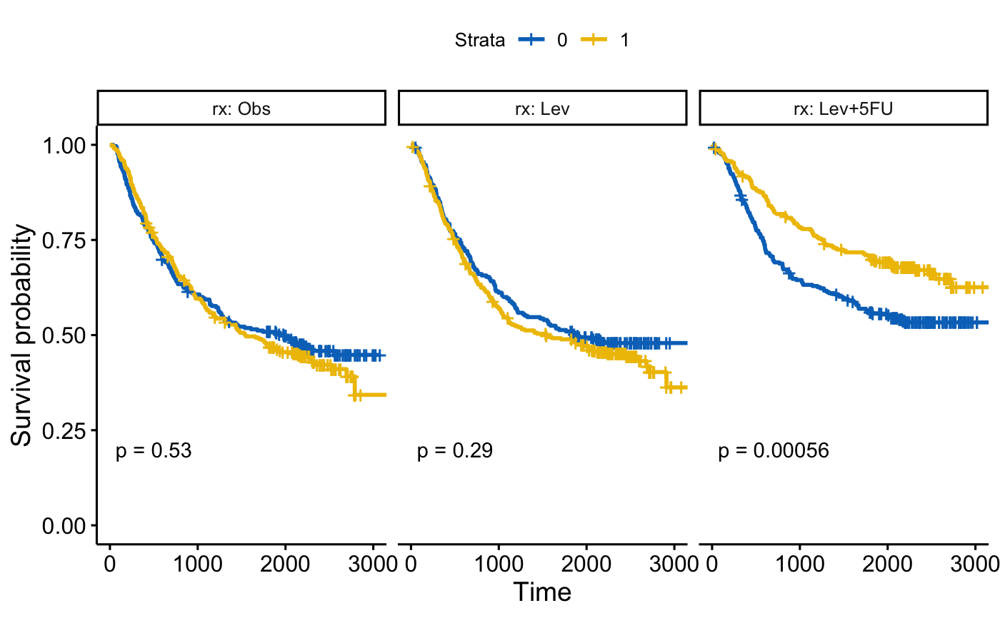
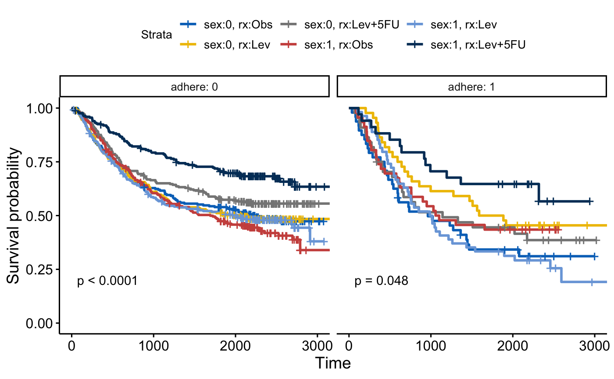

Draw multi-panel survival curves of a data set grouped by one or two variables.
ggsurvplot_facet( fit, data, facet.by, color = NULL, palette = NULL, legend.labs = NULL, pval = FALSE, pval.method = FALSE, pval.coord = NULL, pval.method.coord = NULL, nrow = NULL, ncol = NULL, scales = "fixed", short.panel.labs = FALSE, panel.labs = NULL, panel.labs.background = list(color = NULL, fill = NULL), panel.labs.font = list(face = NULL, color = NULL, size = NULL, angle = NULL), panel.labs.font.x = panel.labs.font, panel.labs.font.y = panel.labs.font, ... )
Arguments
| fit | an object of class survfit. |
|---|---|
| data | a dataset used to fit survival curves. If not supplied then data will be extracted from 'fit' object. |
| facet.by | character vector, of length 1 or 2, specifying grouping variables for faceting the plot. Should be in the data. |
| color | color to be used for the survival curves.
|
| palette | the color palette to be used. Allowed values include "hue" for the default hue color scale; "grey" for grey color palettes; brewer palettes e.g. "RdBu", "Blues", ...; or custom color palette e.g. c("blue", "red"); and scientific journal palettes from ggsci R package, e.g.: "npg", "aaas", "lancet", "jco", "ucscgb", "uchicago", "simpsons" and "rickandmorty". See details section for more information. Can be also a numeric vector of length(groups); in this case a basic color palette is created using the function palette. |
| legend.labs | character vector specifying legend labels. Used to replace the names of the strata from the fit. Should be given in the same order as those strata. |
| pval | logical value, a numeric or a string. If logical and TRUE, the p-value is added on the plot. If numeric, than the computet p-value is substituted with the one passed with this parameter. If character, then the customized string appears on the plot. See examples - Example 3. |
| pval.method | whether to add a text with the test name used for
calculating the pvalue, that corresponds to survival curves' comparison -
used only when |
| pval.coord | numeric vector, of length 2, specifying the x and y coordinates of the p-value. Default values are NULL. |
| pval.method.coord | the same as |
| nrow, ncol | Number of rows and columns in the pannel. Used only when the data is faceted by one grouping variable. |
| scales | should axis scales of panels be fixed ("fixed", the default), free ("free"), or free in one dimension ("free_x", "free_y"). |
| short.panel.labs | logical value. Default is FALSE. If TRUE, create short labels for panels by omitting variable names; in other words panels will be labelled only by variable grouping levels. |
| panel.labs | a list of one or two character vectors to modify facet label text. For example, panel.labs = list(sex = c("Male", "Female")) specifies the labels for the "sex" variable. For two grouping variables, you can use for example panel.labs = list(sex = c("Male", "Female"), rx = c("Obs", "Lev", "Lev2") ). |
| panel.labs.background | a list to customize the background of panel labels. Should contain the combination of the following elements:
For example, panel.labs.background = list(color = "blue", fill = "pink"). |
| panel.labs.font | a list of aestheics indicating the size (e.g.: 14), the face/style (e.g.: "plain", "bold", "italic", "bold.italic") and the color (e.g.: "red") and the orientation angle (e.g.: 45) of panel labels. |
| panel.labs.font.x, panel.labs.font.y | same as panel.labs.font but for x and y direction, respectively. |
| ... | other arguments to pass to the function |
Examples
library(survival) # Facet by one grouping variables: rx #:::::::::::::::::::::::::::::::::::::::::::::::::::::::: fit <- survfit( Surv(time, status) ~ sex, data = colon ) ggsurvplot_facet(fit, colon, facet.by = "rx", palette = "jco", pval = TRUE)#> Warning: `as.tibble()` is deprecated as of tibble 2.0.0. #> Please use `as_tibble()` instead. #> The signature and semantics have changed, see `?as_tibble`. #> This warning is displayed once every 8 hours. #> Call `lifecycle::last_warnings()` to see where this warning was generated.# Facet by two grouping variables: rx and adhere #:::::::::::::::::::::::::::::::::::::::::::::::::::::::: ggsurvplot_facet(fit, colon, facet.by = c("rx", "adhere"), palette = "jco", pval = TRUE)# Another fit #:::::::::::::::::::::::::::::::::::::::::::::::::::::::: fit2 <- survfit( Surv(time, status) ~ sex + rx, data = colon ) ggsurvplot_facet(fit2, colon, facet.by = "adhere", palette = "jco", pval = TRUE)